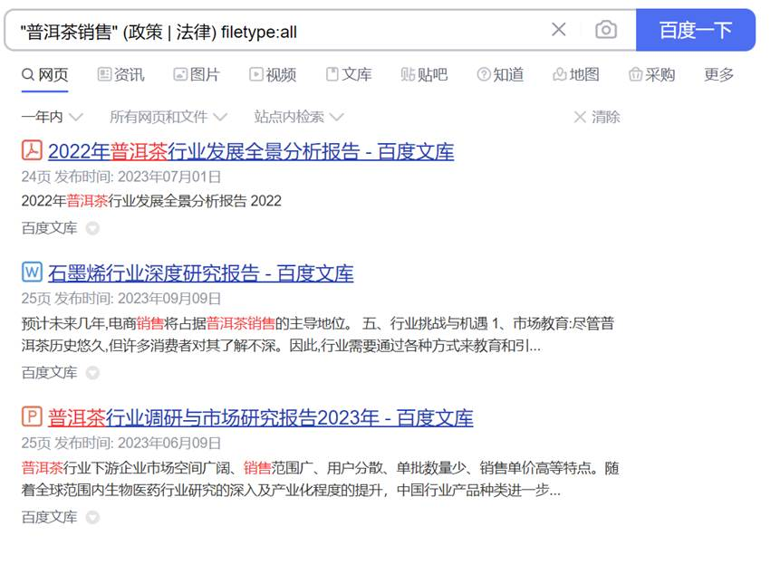

- 搜索引擎检索分析：根据所构建的模拟机构的情况，自己设定相应的检索主题（围绕机构所属行业背景与环境、政策法律、前沿新闻、竞争对手等）使用搜索引擎进行检索，将检索结果信息整理后在自己建立的网站发布。完成《搜索引擎检索分析报告》。
(1)前期准备：
①检索主题：普洱茶销售。
②检索引擎：百度(https://www.baidu.com/)
(2)使用高级检索功能检索一年内与主题相关的行业背景与环境相关内容：
①调出高级检索界面

②检索设置：
检索结果选择“包含完整关键词”填写“普洱茶销售”，选择“包含任意关键词”填写“行业背景 环境”，时间选择“一年内”，其余保持默认。
共检索到8页信息，从检索结果看，既有相关网页，也有相关文件。
(3)使用高级检索功能检索与主题政策法律相关的一年内的文件格式内容：
检索结果选择“包含完整关键词”填写“普洱茶销售”，选择“包含任意关键词”填写“政策 法律”，时间选择“一年内”，文档格式选择“所有格式”其余保持默认。
从结果看，共检索到3条结果，都是文件格式的信息，

(3)检索一个月内的与主题相关的新闻
检索结果选择“包含完整关键词”填写“普洱茶销售”，选择“包含任意关键词”填写“新闻”，时间选择“一月内”，关键词位置选择“仅网页标题中”其余保持默认。
共检索到8条信息，都是与主题相关的新闻。
(4)在京东上检索与普洱茶有关店铺的销售情况，了解竞争对手
检索结果选择“包含完整关键词”填写“普洱茶”，时间选择“一年内”，关键词位置选择“仅网页标题中”，站内搜索填写“jd.com”其余保持默认。
共检索到3页信息，且均为京东网上的信息。
(5)搜索引擎分析
大量的商业化导致百度搜索引擎的易用度有所下降，有一些弹窗和广告，的存在影响了检索结果的精确度，往往会导致大量无用信息的干扰。高级搜索指令组合使用变化多端，功能强大。搜索引擎的高级搜索指令，可以帮助你在最短的时间里，找到你想要的东西。